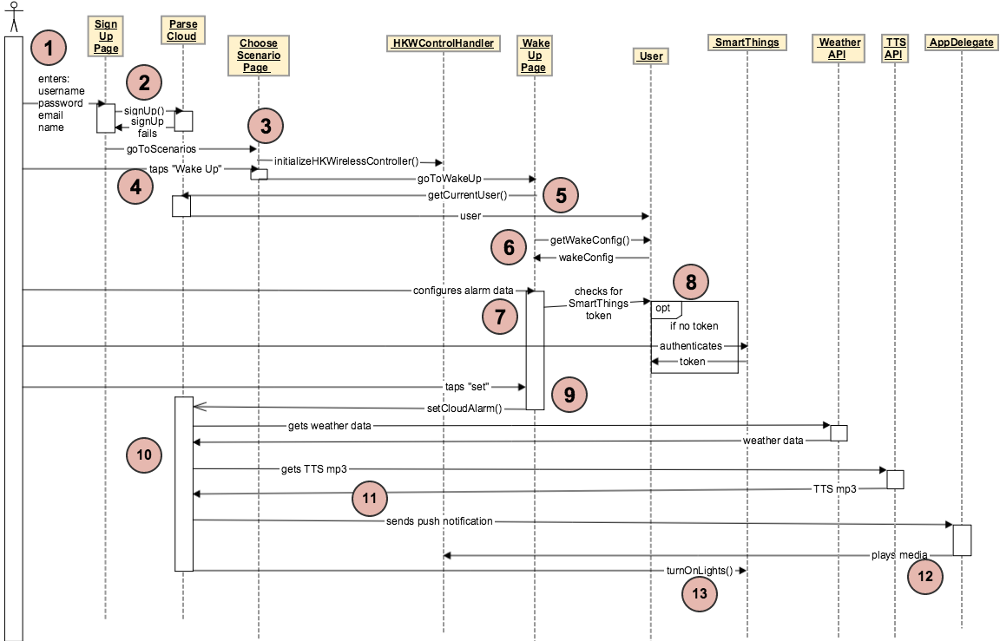

Wake Up Scenario¶
Have trouble reading image? `Click Here! <http://hkiotdemo.readthedocs.org/en/latest/_images/wakeupsd.png`__

- The user fires up the HK Rules iOS app and enters their username, password, email, and name into the “Sign Up” page.
- The “Sign Up” page signs the user up in the Parse Cloud to create their “HK Rules account”, which creates a “User” object representing that user. If the sign-up fails, the user is redirected back to the “Sign Up” page.
- If the sign-up is successful, the user is directed to the “Choose Scenario” page, which initializes the HKWControlHandler object.
- On the “Choose Scenario” page, the user taps “Wake Up”, which brings them to the “Wake Up” page.
- The “Wake Up” page requests the currentUser from Parse.
- The “Wake Up” page queries the currentUser for the WakeConfig object.
- The user then configures the wakeConfig alarm data.
- If the user chooses the “Turn on lights” option for their alarm, the “Wake Up” page checks to see if the current user has a SmartThings token. If it doesn’t, then the user is redirected to SmartThings where they can authenticate their SmartThings account and gain a token for future control of their SmartThings devices.
- Once the user has configured all their alarm settings, he or she taps “Set”, which will trigger the “setCloudAlarm()” function on the Parse Cloud.
- During the “setCloudAlarm()” function, the Parse Cloud gets weather and TTS data from external APIs to send back to the user during the alarm.
- At the designated alarm time, Parse sends a push notification to AppDelegate running in the HK Rules app on the user’s iOS device, with all the configuration data concerning the alarm (alarm sound, weather/tts data, etc.).
- When the AppDelegate receives the push notification, it tells the HKWControlHandler to play the alarm media through the Harman speakers.
- When Parse sends the push notification, it also tells the SmartThings platform to turn on the user’s lights (using the User’s SmartThings authentication token from step 8).